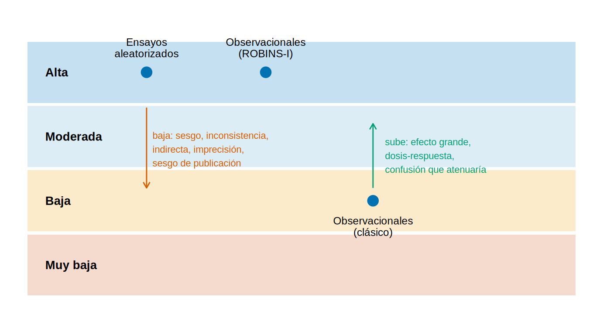

library(tidyverse)
library(metafor)
source("R/funciones_extra_a.R") # num(), pct()
source("R/funciones_cap22.R") # funciones del Cap. 22
theme_set(theme_minimal(base_size = 12))
# 20 ensayos FICTICIOS de un iSGLT2 vs placebo en ERC (Cap. 21)
ensayos <- read_csv("Bases/metaanalisis_isglt2.csv", show_col_types = FALSE) |>
mutate(rob_global = factor(rob_global, levels = c("Bajo", "Algunas dudas", "Alto")))
oraculo <- read_csv("Bases/metaanalisis_isglt2_oraculo.csv", show_col_types = FALSE)¿Qué es la certeza de la evidencia y por qué importa?
Nota🩺 Escenario
En el pase de sala presentas un metaanálisis (datos ficticios) de 20 ensayos de un iSGLT2 frente a placebo en ERC: reduce el evento renal compuesto, «p < 0.0001». Un colega, satisfecho, dice: «yo solo miro el valor p». La jefa de servicio pregunta otra cosa: «¿con cuánta confianza recomendarías esto a un paciente?». Son dos preguntas distintas, y solo la segunda decide qué haces el lunes.
Lo que vamos a hacer
- Distinguir certeza de la evidencia de calidad de los estudios, y ver los cuatro niveles de GRADE.
- Comprobar con el metaanálisis ficticio por qué el valor p no resume la certeza.
- Fijar el punto de partida (ensayo u observacional), los desenlaces críticos y el papel del juicio en GRADE.
Paso 1: certeza no es lo mismo que calidad
GRADE (Grading of Recommendations Assessment, Development and Evaluation; Guyatt y cols., BMJ 2008) es el sistema más usado para decir cuánto confiar en un conjunto de evidencia. Su palabra clave es la certeza (antes se decía «calidad de la evidencia»): la confianza que tenemos en que el efecto verdadero esté cerca del efecto estimado.
La diferencia con la «calidad» de un estudio es importante. La calidad (el riesgo de sesgo de cada ensayo) es solo uno de los motivos por los que puedes confiar menos. Un metaanálisis de ensayos impecables puede tener certeza baja si los resultados se contradicen entre sí, si son pocos pacientes o si faltan los ensayos negativos.
tibble(
Nivel = niveles_certeza[4:1],
Símbolo = simbolo_certeza(niveles_certeza[4:1]),
`Qué significa` = c(
"Mucha confianza: el efecto verdadero está cerca del estimado.",
"Confianza moderada: probablemente está cerca, pero podría ser sustancialmente distinto.",
"Confianza limitada: el efecto verdadero puede ser sustancialmente distinto del estimado.",
"Poca confianza: es probable que el efecto verdadero sea sustancialmente distinto.")
) |> knitr::kable()| Nivel | Símbolo | Qué significa |
|---|---|---|
| Alta | ⊕⊕⊕⊕ | Mucha confianza: el efecto verdadero está cerca del estimado. |
| Moderada | ⊕⊕⊕◯ | Confianza moderada: probablemente está cerca, pero podría ser sustancialmente distinto. |
| Baja | ⊕⊕◯◯ | Confianza limitada: el efecto verdadero puede ser sustancialmente distinto del estimado. |
| Muy baja | ⊕◯◯◯ | Poca confianza: es probable que el efecto verdadero sea sustancialmente distinto. |
Qué vemos. Son cuatro niveles y se aplican a un desenlace, no a un estudio ni a «la revisión entera». El mismo metaanálisis puede tener certeza moderada para la pendiente de TFGe y baja para el evento renal compuesto (lo calificamos en 22.3).
Paso 2: el valor p no es la certeza
Ajustamos el metaanálisis de efectos aleatorios (el Cap. 21 detalla cómo) y miramos lo que miraría tu colega:
RR IC_inf IC_sup
0.65 0.55 0.76 res_evento$pval[1] 1.534738e-07Este metaanálisis tiene verdad conocida porque es simulado. El simulador generó 40 ensayos con un RR medio verdadero de 0.75, pero solo 20 «se publicaron» (los pequeños y poco favorables se publican menos). Comparamos:
estimado verdad_de_estos_20 verdad_de_todos
0.65 0.66 0.75 Qué vemos. El valor p es < 0.0001: ni el más exigente dudaría de que hay efecto. Y el estimado (0.65) es fiel al promedio de estos 20 ensayos (0.66). El problema es otro: estos 20 son más favorables que el conjunto de ensayos que se hicieron (0.75). El valor p mide cuánto ruido de muestreo hay, no qué tan representativos o sesgados son los estudios, ni si se contradicen. Tres señales que el valor p no ve (las desarrollamos en 22.2):
# A tibble: 3 × 2
señal valor
<chr> <chr>
1 Heterogeneidad (I²) 81 %
2 Asimetría del embudo (Egger, p) 0.0049
3 Peso en ensayos sin riesgo de sesgo bajo 65 % Con esas cifras (I² de 81 %, Egger p = 0.0049) el colega que «solo mira el valor p» se queda con la parte más tranquilizadora y menos informativa del resultado.
Paso 3: la pregunta clínica y los desenlaces críticos
GRADE empieza antes de mirar los datos, con la pregunta en formato PICO (población, intervención, comparador, desenlace) y con la lista de desenlaces ordenados por su importancia para el paciente. El panel puntúa cada uno de 1 a 9: 7-9 críticos (deciden la recomendación), 4-6 importantes, 1-3 de importancia limitada. La certeza se califica para cada desenlace, empezando por los críticos.
tribble(
~Desenlace, ~`Puntuación (ejemplo)`, ~Clasificación, ~`¿Lo miden los 20 ensayos ficticios?`,
"Evento renal compuesto (falla renal, duplicar creatinina, muerte renal)", 9, "Crítico", "Sí",
"Mortalidad por cualquier causa", 9, "Crítico", "No",
"Eventos adversos graves (cetoacidosis, depleción de volumen)", 8, "Crítico", "No",
"Pendiente de TFGe (mL/min/1.73 m²/año)", 6, "Importante (sustituto)", "Sí",
"Infecciones genitales", 5, "Importante", "No"
) |> knitr::kable()| Desenlace | Puntuación (ejemplo) | Clasificación | ¿Lo miden los 20 ensayos ficticios? |
|---|---|---|---|
| Evento renal compuesto (falla renal, duplicar creatinina, muerte renal) | 9 | Crítico | Sí |
| Mortalidad por cualquier causa | 9 | Crítico | No |
| Eventos adversos graves (cetoacidosis, depleción de volumen) | 8 | Crítico | No |
| Pendiente de TFGe (mL/min/1.73 m²/año) | 6 | Importante (sustituto) | Sí |
| Infecciones genitales | 5 | Importante | No |
Qué vemos. La puntuación es un ejemplo inventado, no una regla. Pero muestra algo real: la pendiente de TFGe es importante pero no crítica (es un marcador, no lo que el paciente siente), y que la tabla tiene huecos: dos desenlaces críticos que estos ensayos no recogen. Una revisión que califica solo lo que midieron los ensayos puede dar una imagen demasiado optimista del balance.
Paso 4: de dónde se parte
Una vez definidos los desenlaces, el diseño fija el punto de partida de la certeza, que después se baja o se sube:
- Ensayos aleatorizados empiezan en alta: la aleatorización controla, en promedio, los confusores medidos y no medidos.
- Estudios observacionales empiezan en baja en el enfoque clásico, porque la confusión es probable.
- Con ROBINS-I (22.4) se parte de alta también en los observacionales, pero se valora el riesgo de sesgo con una herramienta que lo compara con un ensayo «objetivo». Entonces es frecuente tener que bajar bastante.
niv <- tibble(y = 1:4, nivel = niveles_certeza,
fondo = c("#f4d6c8", "#fbe8c4", "#d9ebf5", "#bfdcef"))
inicios <- tribble(~x, ~y, ~texto,
1, 4, "Ensayos\naleatorizados",
2, 4, "Observacionales\n(ROBINS-I)",
2.9, 1.5, "Observacionales\n(clásico)")
ggplot() +
geom_tile(data = niv, aes(x = 2.3, y = y, fill = fondo), width = 4.6, height = 0.95, alpha = 0.9) +
geom_text(data = niv, aes(x = 0.15, y = y, label = nivel), hjust = 0, fontface = "bold", size = 3.6) +
scale_fill_identity() +
geom_point(data = inicios, aes(x, y + ifelse(y == 1.5, 0.5, 0)), size = 4, color = "#0072B2") +
geom_text(data = inicios, aes(x, y + ifelse(y == 1.5, 0.5, 0) + ifelse(y == 1.5, -0.4, 0.38), label = texto),
size = 3.2, lineheight = 0.9) +
annotate("segment", x = 1, xend = 1, y = 3.45, yend = 2.2, arrow = arrow(length = unit(0.2, "cm")), color = "#D55E00") +
annotate("text", x = 1.05, y = 2.8, hjust = 0, size = 2.9, color = "#D55E00",
label = "baja: sesgo, inconsistencia,\nindirecta, imprecisión,\nsesgo de publicación") +
annotate("segment", x = 2.9, xend = 2.9, y = 2.2, yend = 3.2, arrow = arrow(length = unit(0.2, "cm")), color = "#009E73") +
annotate("text", x = 3.0, y = 2.7, hjust = 0, size = 2.9, color = "#009E73",
label = "sube: efecto grande,\ndosis-respuesta,\nconfusión que atenuaría") +
coord_cartesian(xlim = c(0, 4.6), ylim = c(0.4, 4.9)) +
theme_void()
Qué vemos. Empezar en alta no es un premio: un ensayo puede perder dos o tres niveles. Y empezar en baja no es una condena: un estudio observacional con un efecto enorme y sin explicaciones alternativas puede subir (22.4). Un ensayo, en cambio, no puede pasar de alta.
Paso 5: GRADE es un juicio, no un cálculo
No existe una fórmula que convierta I², Egger y pesos en «moderada» o «baja». Las marcas numéricas (22.2) orientan, pero la decisión es de una persona o de un panel, que debe escribir sus razones. Veamos dos revisoras con los mismos datos: la función certeza_final() solo hace la contabilidad de los niveles que ellas deciden.
tribble(
~revisora, ~inicio, ~bajar, ~razon,
"A", "Alta", 2, "Inconsistencia (-1) y sesgo de publicación (-1)",
"B", "Alta", 1, "Inconsistencia (-1); la heterogeneidad se explica en parte por la albuminuria"
) |>
mutate(certeza = map2_chr(inicio, bajar, \(i, b) certeza_final(i, bajar = b))) |>
knitr::kable()| revisora | inicio | bajar | razon | certeza |
|---|---|---|---|---|
| A | Alta | 2 | Inconsistencia (-1) y sesgo de publicación (-1) | Baja |
| B | Alta | 1 | Inconsistencia (-1); la heterogeneidad se explica en parte por la albuminuria | Moderada |
Qué vemos. A y B parten de los mismos 20 ensayos y llegan a «Baja» y «Moderada». Eso no es un error: es desacuerdo razonable sobre cuánto pesa el sesgo de publicación. Lo que GRADE exige es que la razón quede por escrito (en las notas de la tabla, 22.3) para que otros puedan discutirla.
Trampas frecuentes
Advertencia⚠️ Tres confusiones clásicas
- Calidad ≠ certeza. «Todos los ensayos eran de bajo riesgo de sesgo» no implica certeza alta (pueden discrepar o ser pocos).
- La certeza no es global. Se califica por desenlace; una misma revisión tiene varias certezas.
- GRADE no es una casilla que se marca. Si tu «calificación» sale de contar señales de alerta, no hiciste un juicio: aplicaste una regla que GRADE no tiene.
Importante🎯 En resumen
- La certeza es la confianza en que el efecto verdadero esté cerca del estimado; tiene cuatro niveles: alta, moderada, baja y muy baja.
- El valor p (< 0.0001 aquí) no la resume: no ve heterogeneidad (I² = 81 %), sesgo de publicación ni representatividad.
- Se califica por desenlace, empezando por los críticos; el punto de partida depende del diseño (ensayo: alta; observacional: baja, o alta con ROBINS-I).
- Es un juicio explícito y justificado: dos revisoras razonables pueden discrepar y ambas ser transparentes.
Ejercicio
- Con
certeza_final(), ¿en qué nivel cae un ensayo que baja por riesgo de sesgo (-1), imprecisión (-1) y sesgo de publicación (-1)? ¿Y si parte de «Baja» y sube un nivel? - Elige una pregunta clínica de tu servicio (p. ej. bicarbonato en ERC G3b-G4) y escribe tres desenlaces críticos y dos importantes. ¿Cuáles suelen faltar en los ensayos?
- Explica en dos frases a tu colega por qué un metaanálisis con
p < 0.0001puede tener certeza baja.
Referencias
- Guyatt GH, Oxman AD, Vist GE, et al. GRADE: an emerging consensus on rating quality of evidence and strength of recommendations. BMJ. 2008;336:924-926.
- Balshem H, Helfand M, Schünemann HJ, et al. GRADE guidelines: 3. Rating the quality of evidence. J Clin Epidemiol. 2011;64:401-406.
- Schünemann H, Brożek J, Guyatt G, Oxman A (eds.). GRADE Handbook (guía del grupo GRADE; consulta la versión vigente).